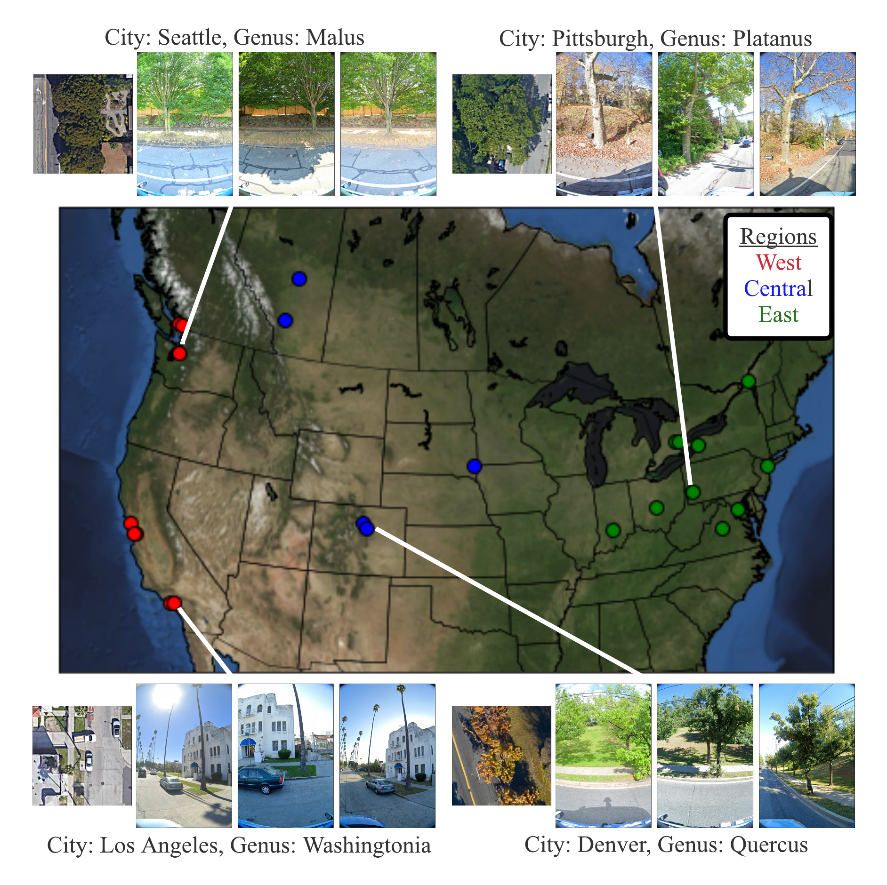
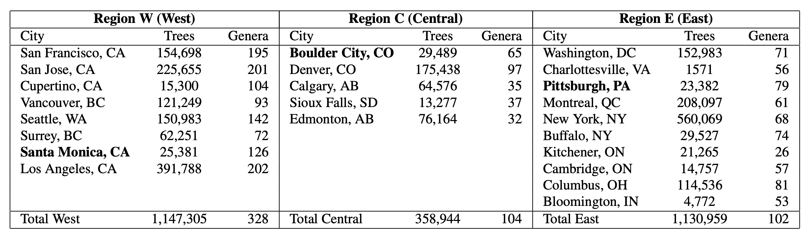
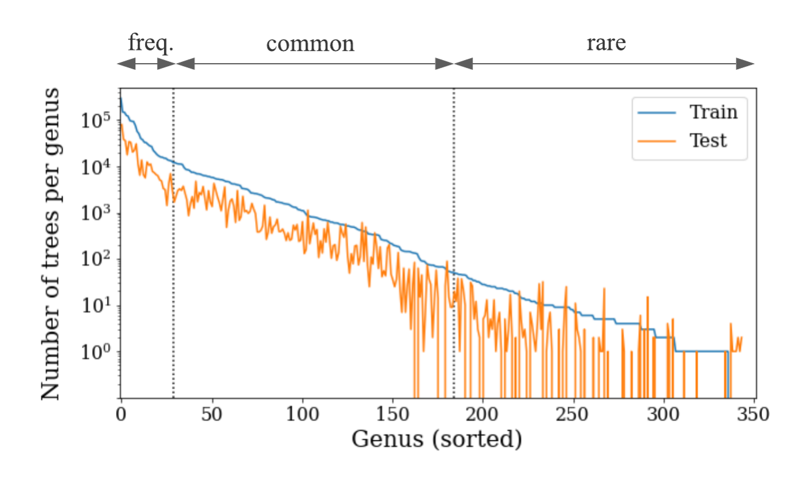
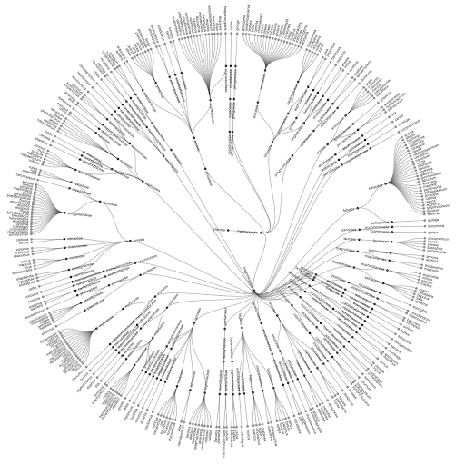
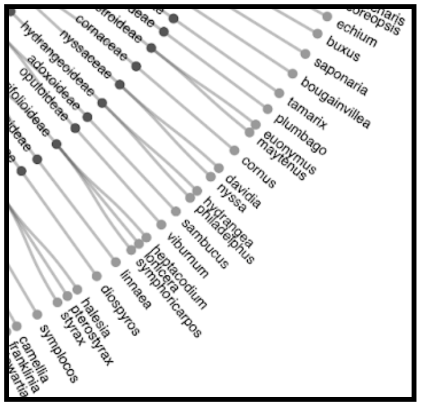
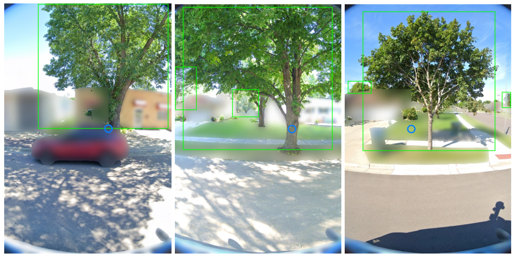

Dataset Overview


We propose urban forest monitoring as an ideal testbed for working on several computer vision challenges (domain generalization, fine-grained categorization, long-tail learning, multiview vision), while working towards filling a crucial environmental and societal need. Urban forests provide significant benefits to urban societies (e.g., cleaner air and water, carbon sequestration, and energy savings among others). However, planning and maintaining these forests is expensive. One particularly costly aspect of urban forest management is monitoring the existing trees in a city: e.g., tracking tree locations, species, and health. Monitoring efforts are currently based on tree censuses built by human experts, costing cities millions of dollars per census and thus collected infrequently.

Previous investigations into automating urban forest monitoring focused on small datasets from single cities, covering only common categories. To address these shortcomings, we introduce a new large-scale dataset that joins public tree censuses from 23 cities with a large collection of street level and aerial imagery. Our Auto Arborist dataset contains over 2.5M trees and over 300 genera and is more than 2 orders of magnitude larger than the closest dataset in the literature. In our paper we introduce baseline results on our dataset across modalities as well as metrics for the detailed analysis of generalization with respect to geographic distribution shifts, vital for such a system to be deployed at-scale.
Dataset Challenges
Generalization to novel domains is a fundamental challenge for computer vision. Near-perfect accuracy on benchmarks is common, but these models do not work as expected when deployed outside of the training distribution. To build computer vision systems that truly solve real-world problems at global scale, we need benchmarks that fully capture real-world complexity, including geographic domain shift, long-tailed distributions, and data noise.




We may post updates about the project and dataset on our Google Group: https://groups.google.com/g/auto-arborist.
We would love to hear back from you if you have questions or suggestions or success stories relating to this dataset. You can reach out to us at: auto-arborist+managers@googlegroups.com.
If you are interested in accessing the dataset please fill out the following form. We are releasing the dataset in phases, and we are manually verifying that PII is obscured for all images before release. A data card for our model can be downloaded here.